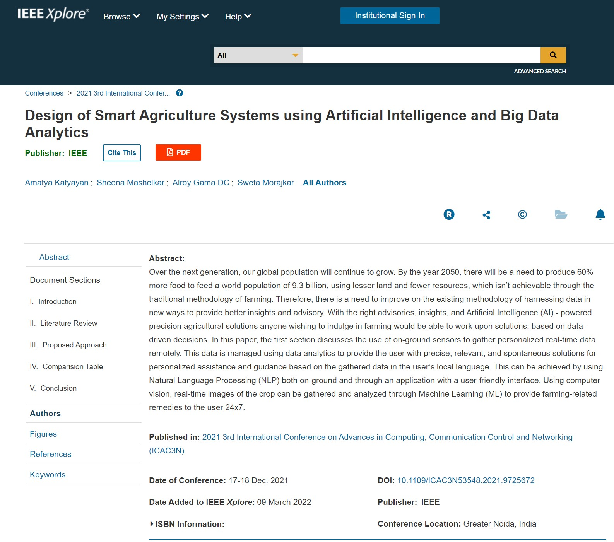

Publication
IEEE Xplore, 2022
Design of Smart Agriculture Systems using Artificial Intelligence and Big Data Analytics
Research
My research focuses on how AI and data-driven systems can support practical decision-making in agriculture.
Publication
Design of Smart Agriculture Systems using Artificial Intelligence and Big Data Analytics

Paper Spotlight
Research focused on AI and big data analytics for smart agriculture systems and crop decision support.
The paper was presented at the 3rd International Conference on Advances in Computing, Communication Control and Networking (ICAC3N).
Conference Context
The research was presented through an international conference venue focused on advances in computing, communication, control, and networking.